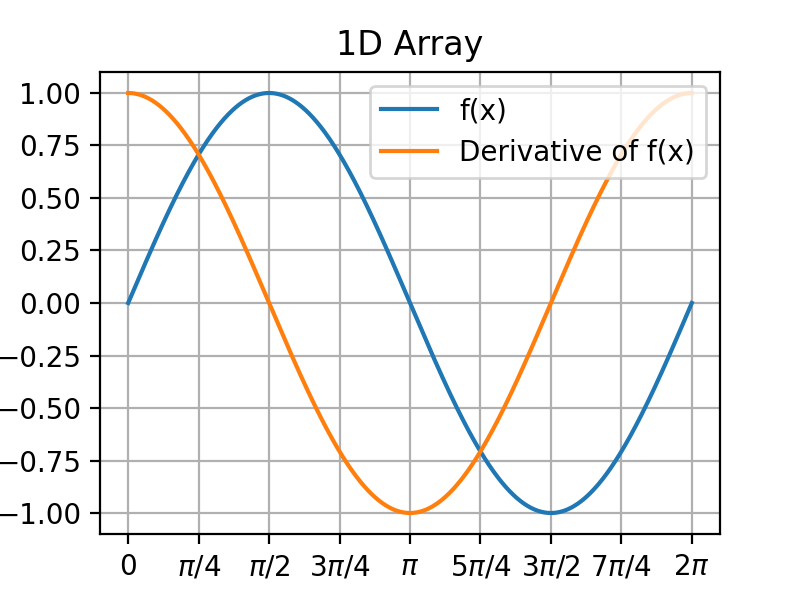
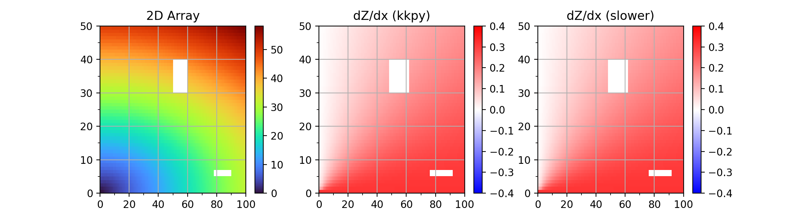

Note
Click here to download the full example code or to run this example in your browser via Binder
Computing derivative¶
Examples showing the calculation of derivative of 1D and 2D arrays. Note that 1) the speed is enhanced, 2) the edge issue during the convolution is resolved, and 3) the NaN values are considered.
- 
- 
Out:
kkpy : 515 ms (18.0x faster)
slow : 9249 ms
Is equal? : True
8 9 10 11 12 13 14 15 16 17 18 19 20 21 22 23 24 25 26 27 28 29 30 31 32 33 34 35 36 37 38 39 40 41 42 43 44 45 46 47 48 49 50 51 52 53 54 55 56 57 58 59 60 61 62 63 64 65 66 67 68 69 70 71 72 73 74 75 76 77 78 79 80 81 82 83 | import numpy as np
import matplotlib.pyplot as plt
import datetime
import kkpy
def ddx_slow(var, dx):
res = np.full(var.shape, np.nan)
for i in np.arange(var.shape[0]):
for j in np.arange(var.shape[1]):
if j <= int(dx/2):
res[i,j] = (arr2d[i,j+int(dx/2)]-arr2d[i,0]) / (j+int(dx/2))
elif j+int(dx/2) > var.shape[1]-1:
res[i,j] = (arr2d[i,-1]-arr2d[i,j-int(dx/2)]) / (var.shape[1]-j+int(dx/2)-1)
else:
res[i,j] = (arr2d[i,j+int(dx/2)]-arr2d[i,j-int(dx/2)]) / (dx-1)
return res
winsize = 5
# 1D Array
xarr = np.linspace(0, 2*np.pi, 1000)
yarr = np.sin(xarr)
deriv1d = kkpy.util.derivative(yarr, winsize, pixelsize=xarr[1]-xarr[0])
fig = plt.figure(figsize=(4,3), dpi=200)
plt.plot(xarr, yarr, label='f(x)')
plt.plot(xarr, deriv1d, label='Derivative of f(x)')
kkpy.plot.tickint(ax=plt.gca(), major=np.pi/4)
plt.gca().set_xticks(np.arange(0, 2*np.pi+0.01, np.pi/4))
plt.gca().set_yticks(np.arange(-1, 1.01, 0.25))
labels = ['$0$', r'$\pi/4$', r'$\pi/2$', r'$3\pi/4$', r'$\pi$',
r'$5\pi/4$', r'$3\pi/2$', r'$7\pi/4$', r'$2\pi$']
plt.gca().set_xticklabels(labels)
plt.legend()
plt.grid()
plt.title('1D Array')
plt.show()
# 2D Array
arr2d = np.sqrt(np.arange(100)**2/10 + np.arange(50)[:,np.newaxis]**2)
arr2d[30:40,50:60] = np.nan
arr2d[5:7,78:90] = np.nan
time1 = datetime.datetime.now()
deriv2d_kkpy = kkpy.util.derivative(arr2d, winsize, axis=1)
elapsed_kkpy = datetime.datetime.now()-time1
time2 = datetime.datetime.now()
deriv2d_slow = ddx_slow(arr2d, winsize)
elapsed_slow = datetime.datetime.now()-time2
titles = ['2D Array', 'dZ/dx (kkpy)', 'dZ/dx (slower)']
minmax = 0.4
fig = plt.figure(figsize=(11,3), dpi=200)
gs = fig.add_gridspec(1,3)
ax = plt.subplot(gs[0])
pm = ax.pcolormesh(arr2d, cmap=plt.cm.turbo)
kkpy.plot.tickint(ax=ax, major=20, minor=10, which='xaxis')
kkpy.plot.tickint(ax=ax, major=10, minor=5, which='yaxis')
plt.colorbar(pm, ax=ax)
ax.set_title(titles[0])
plt.grid()
for i_v, variable in enumerate([deriv2d_kkpy, deriv2d_slow]):
ax = plt.subplot(gs[i_v+1])
pm = ax.pcolormesh(variable, vmin=-minmax, vmax=minmax, cmap=plt.cm.bwr)
kkpy.plot.tickint(ax=ax, major=20, minor=10, which='xaxis')
kkpy.plot.tickint(ax=ax, major=10, minor=5, which='yaxis')
plt.colorbar(pm, ax=ax)
ax.set_title(titles[i_v+1])
plt.grid()
plt.show()
print(f'kkpy : {elapsed_kkpy.microseconds} ms ({elapsed_slow.microseconds/elapsed_kkpy.microseconds:.1f}x faster)')
print(f'slow : {elapsed_slow.microseconds} ms')
print('Is equal? : ', np.array_equal(deriv2d_kkpy, deriv2d_slow, equal_nan=True))
|
Total running time of the script: ( 0 minutes 7.408 seconds)
Estimated memory usage: 45 MB